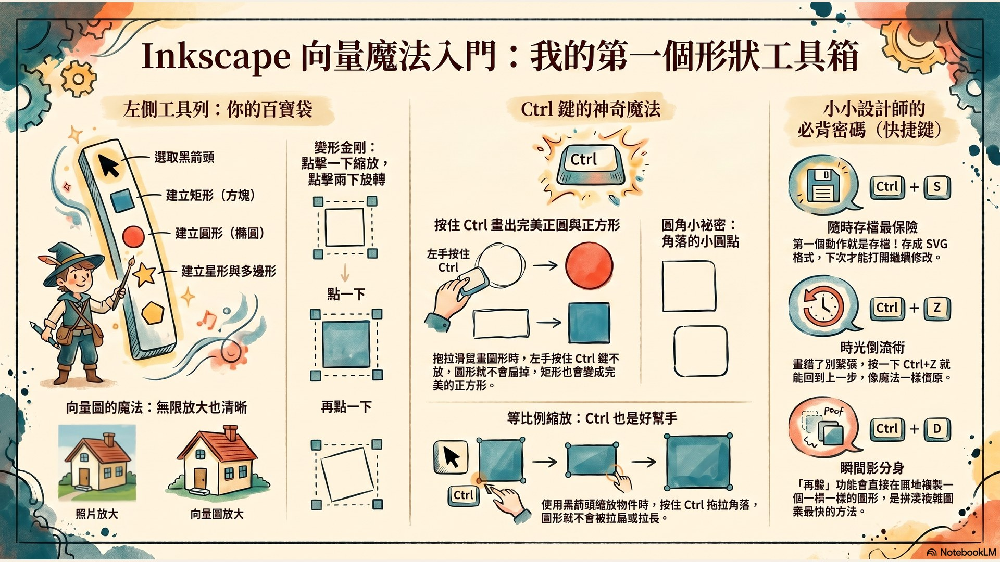
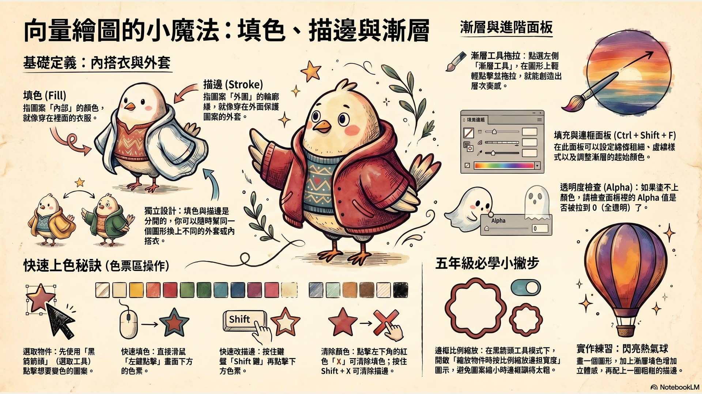
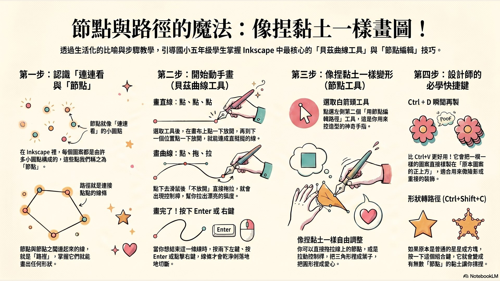
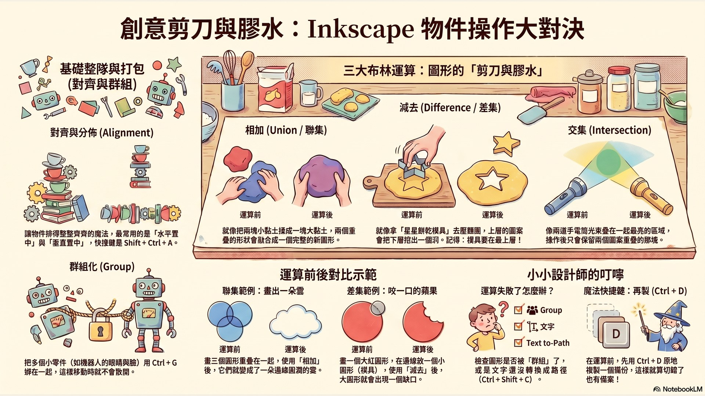
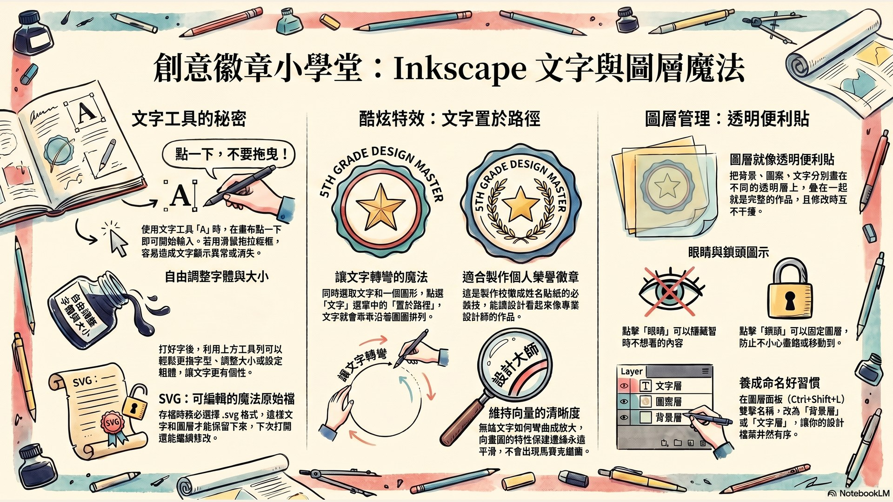
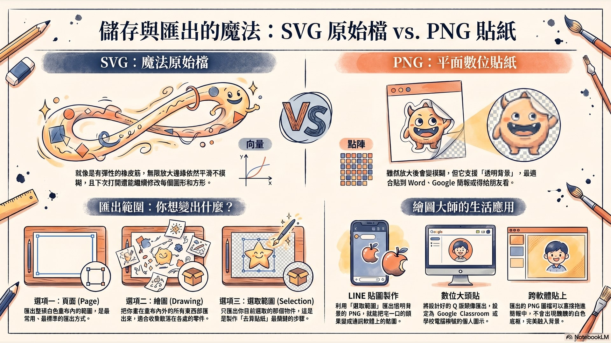

這堂課你會學到什麼？
認識 Inkscape 介面 × 基本形狀工具
📐 完整操作步驟
- 點選左側工具列的 矩形與正方形 或 圓形/橢圓形/弧形 圖示。
- 在畫布上拖拉，同時按住 Ctrl 鍵，就能畫出完美的正方形與正圓形。
- 選擇黑箭頭「選取和變形物件」，點一下圖案可以縮放，再點一次可以旋轉。
- 使用「星形與多邊形工具」，上方工具列可切換規則多邊形 / 星形，調整頂角數量。
- 必學快捷鍵：Ctrl+滾輪 縮放畫面、Ctrl+S 存檔、Ctrl+Z 復原。

🎮 互動練習：機器人頭像拼裝
點擊下方按鈕往畫布加入圓形、方形或星形，自由組合一個機器人頭像！
Q1畫正方形或正圓形時，要按住哪一個鍵才能畫出完美比例？
Q2畫完之後想復原上一步，最快的快捷鍵是？
👩🏫 給老師的引導建議
本關建議分 2 節課完成。第一節先做「圖形拆解大腦風暴」— 給每組學生 3 張真實 Logo（如 Apple、Nike、星巴克），讓他們在白板畫出「這個 Logo 可以拆解成哪些基本形狀」。第二節再進入軟體操作。常見誤區：學生會用滑鼠拖拉的方式畫文字（其實要用「點擊」），這個提醒在第 5 關會再強化。
填色、描邊與漸層 — 魔法調色盤
🎨 完整操作步驟
- 用黑箭頭選取圖形後，直接點擊畫面最下方的色票就能改變內部填色（Fill）。
- 按住 Shift 再點擊下方色票，就會改變描邊（Stroke）顏色。
- 打開「填充與邊框」面板：快捷鍵 Ctrl+Shift+F，可設定線條粗細、虛線樣式、透明度。
- 使用「漸層工具」：點選左側漸層工具圖示，在圖形上拖拉一條線，就會產生漸層！
- 清除填色點左下方的 X；清除描邊則是 Shift + 點 X。

🎨 互動練習：色票調色盤
點擊任何顏色看圖形即時變色！再點漸層按鈕看魔法漸層效果。
Q1圖形外圍的輪廓線顏色叫做？
Q2明明點了色票，圖形卻是透明看不見，最可能是什麼原因？
👩🏫 給老師的引導建議
建議讓學生先做「閃亮熱氣球」小作品 — 一個大圓 + 漸層填色 + 粗外框。漸層方向（垂直/水平/對角線）會影響立體感，讓學生實驗不同方向感受差異。如果教室機器跑太慢，可以先讓學生只用色票區的單色填色，下一節再進階到漸層。
路徑與節點 — 像捏黏土一樣自由
✏️ 完整操作步驟
- 點選左側「繪製貝茲曲線及直線」（像鋼筆的工具）。畫直線：點一下放開、點下一個點放開。
- 畫曲線：點下去後不放開滑鼠並拖拉，控制桿會拉出曲線弧度。
- 結束繪製：按 Enter 鍵或滑鼠右鍵，線條就會切斷！
- 節點編輯：點選左側「用節點編輯路徑」工具（白箭頭），拖拉節點或控制桿改變形狀。
- 形狀轉路徑：選取後按 Ctrl+Shift+C，把形狀變成可編輯的節點路徑。
- 複製：Ctrl+C → Ctrl+V 貼游標位置；Ctrl+D 再製貼原位置（最常用！）。

🎮 互動練習：節點拉拉樂
拖曳節點（藍色小方塊）改變路徑形狀，看看你能拉出什麼有趣圖案！
Q1畫貝茲曲線時，要怎樣結束繪製讓線條停下來？
Q2要把圖形複製貼上「在原來位置」，最方便的快捷鍵是？
👩🏫 給老師的引導建議
貝茲曲線需要大量練習。建議先讓學生畫「奇幻小樹葉」(三角形 → 拉成樹葉)，再進階畫「Q 版貓咪輪廓」。形狀轉路徑（Ctrl+Shift+C）是進階概念，可以先示範一次但不要強求學生記住，下一關布林運算會再用到。
物件操作 — 對齊、群組與布林運算
🍪 三大布林運算（餅乾模具大法）
- 相加 / 聯集（Union）：兩塊黏土揉成一塊大黏土。【路徑】→【相加】或 Ctrl++
- 減去 / 差集（Difference）：拿星星模具壓麵團，挖一個星星洞！放最上層的當餅乾模具。【路徑】→【減去】或 Ctrl+-
- 交集（Intersection）：只保留兩個圖形重疊的部分。【路徑】→【交集】或 Ctrl+*
- 對齊與分布：框選多物件 → 【物件】→【對齊與分佈】或 Shift+Ctrl+A
- 群組：Ctrl+G 把多物件綁在一起；Ctrl+Shift+G 解散。

🎮 互動練習：布林運算實驗室
看圓形和方形怎麼透過三種布林運算變成全新圖形！
Q1用「減去」要在大圓形上挖一個星星洞，星星應該放在哪一層？
Q2布林運算對哪一種物件有效？
👩🏫 給老師的引導建議
「咬一口的蘋果」是經典練習：兩個圓相加 + 小圓減去 = 經典 Apple Logo 概念。學生最常踩雷在「圖形不是路徑」(會跳出狀態列錯誤訊息)，提醒大家做運算前先確認沒有群組。可以引導學生猜「Apple、星巴克 Logo 是怎麼用布林運算做出來的？」激發好奇心。
文字工具與圖層管理 — 透明便利貼疊出風景
📝 完整操作步驟
- 點左側「A」文字工具，在畫布上「點一下」（不要拖曳！）就能打字。
- 在上方工具列調整字型、大小、粗體、字間距。Inkscape 支援所有中文字型！
- 打開圖層面板：Ctrl+Shift+L。點 + 新增圖層，雙擊圖層名稱可改名。
- 鎖定圖層：點「鎖頭圖示」；隱藏圖層：點「眼睛圖示」。
- 超酷特效「置於路徑」：先打文字 → 畫一個圓 → 同時選取兩者 →【文字】→【置於路徑】，文字就會沿著圓彎曲！
- 右鍵物件 → 移到圖層 → 選擇目標圖層，可在圖層間搬移物件。

🎮 互動練習：圖層便利貼模擬
點按鈕切換圖層的「眼睛」與「鎖頭」，體驗圖層怎麼運作！
Q1用文字工具想打字，但畫面變成空白沒字出現，最可能是？
Q2圖層面板上的「鎖頭」圖示有什麼用？
👩🏫 給老師的引導建議
「置於路徑」是學生最有成就感的功能！建議讓全班一起做「專屬榮譽徽章」：圓形邊框 + 文字繞著圓邊排列 + 中間放姓名。鎖定圖層的習慣要從這一關開始建立，否則之後做海報專案會一直畫錯背景。
匯出 SVG 與 PNG — 把作品變成可分享的圖片
💾 完整操作步驟
- 第一步永遠是存原始檔：【檔案】→【儲存】或 Ctrl+S，存成 .svg 格式。
- 匯出 PNG：【檔案】→【匯出 PNG 圖片】或 Ctrl+Shift+E。
- 選對匯出範圍很重要：
- 頁面：匯出整個畫布（最常用）
- 繪圖：匯出畫布外所有東西
- 選取範圍：只匯出選取物件（適合去背貼紙！）
- 設定尺寸（解析度 96 DPI 即可）、檔名、按【匯出】。
- PNG 最大特色：支援透明背景！沒選取的部分會是透明，貼到簡報不會有白色方塊。

🎮 互動練習：SVG vs PNG 比較
看看 SVG 怎麼放大都清晰，PNG 放大會變模糊！
Q1畫完作品要繼續修改，老師說一定要存成什麼格式？
Q2想把畫好的小恐龍變成 LINE 貼圖（背景透明），匯出時要選什麼範圍？
Q3下列哪個應用最適合用 SVG 格式？
👩🏫 給老師的引導建議
建議讓學生做「個人專屬去背貼圖」作為畢業作業 — 把第 4 關的「咬一口蘋果」用「選取範圍」匯出 PNG，丟進 LINE 個人貼圖，學生會超有成就感！同時提醒學生：上傳 Google Classroom 用 PNG，作品檔案備份用 SVG。
🎨 四大創作專案任務
把學到的 6 大技能組合運用，挑戰下面 4 個生活化專案！
👤 專案一：我的數位大頭貼
用圓形與方形拼出 Q 版自畫像。匯出去背 PNG 後，直接用作 Google Classroom 大頭貼、LINE 頭像、學校電腦帳號頭像！
🏅 專案二：我們這一班 — 超級徽章
結合星形底板、布林運算、文字置於路徑。設計獨一無二的班徽，印出來貼在公告欄、做班服 LOGO 提案！
🎨 專案三：手繪魔法變貼紙
把紙上手繪稿拍照匯入，用「描繪點陣圖」變成數位向量，加上漸層上色，印出來做永遠不糊的防水貼紙！
🎉 專案四：心意滿滿節慶海報
用圖層分管理背景與圖案，搭配對齊工具讓畫面整齊。完成母親節 / 校慶 / 畢業海報，列印實體送家人！
🎬 NotebookLM AI 自學影片
📓 NotebookLM 學習資源 × FAQ
研究本（26 個來源）
深度搜尋彙整：Inkscape 中文教學部落格、新營/新南學習網、官方文件、布林運算 YouTube 教學等。
精簡本（簡報來源）
萃取後的精華筆記 + 主講者形象 PDF。本駕駛艙的簡報與資訊圖表都來自此筆記本。
Inkscape 繁中官網
免費下載 Windows / Mac / Linux 版本。100% 免費、繁體中文介面、功能完整無限制。